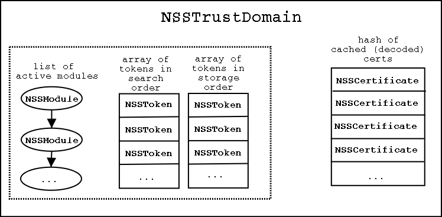

This is a working document for progress on Stan design/development.
Current build
and test
instructions.
The current set of Stan libraries.
asn1
base
ckfw
dev
pki
pki1
pkix
"Public" types below (those available to consumers of
NSS) begin with "NSS". "Protected" types (those only available
within NSS) begin with "nss".
Open issues appears as numbered indents.
ASN.1 encoder/decoder wrapping around the current
ASN.1 implementation.
NSSASN1EncodingType
nssASN1Item
nssASN1Template
nssASN1ChooseTemplateFunction
nssASN1Encoder
nssASN1Decoder
nssASN1EncodingPart
nssASN1NotifyFunction
nssASN1EncoderWriteFunction
nssASN1DecoderFilterFunction
Set of base utilities for Stan implementation. These
are all fairly straightforward, except for nssPointerTracker.
NSSError
NSSArena
NSSItem
NSSBER
NSSDER
NSSBitString
NSSUTF8
NSSASCII7
nssArenaMark
nssPointerTracker
This is intended for debug builds only.
- Ignored for now.
nssStringType
Suggested additions:
- nssList - A list that optionally uses a lock. This list would
manage the currently loaded modules in a trust domain, etc.
- SECMODListLock kept track of the number of waiting threads. Will
this be needed in the trust domain?
The cryptoki framework, used for building cryptoki tokens.
This needs to be described in a separate document showing
how to set up a token using CKFW. This code only relates to
tokens, so it is not relevant here.
Defines cryptoki devices used in NSS. This
is not part of the exposed API. It is a low-level API allowing NSS
to manage cryptoki devices.
The relationship is like this:
libpki --> libdev --> cryptoki
As an example,
NSSTrustDomain_FindCertificate --> NSSToken_FindCertificate -->
C_FindObjects
NSSModule
Replaces the SECMOD API. The module manages a PRLibrary
that holds a cryptoki implementation via a number of slots. The
API should provide the ability to Load and Unload a module, Login
and Logout to the module (through its slots), and to locate a particular
slot/token.
NSSSlot
This and NSSToken combine to replace the PK11 API parts
that relate to slot and token management. The slot API should
provide the ability to Login/Logout to a slot, check the login status,
determine basic configuration information about the slot, and modify
the password settings.
- Should slots also maintain a default session? This session would
be used for slot management calls (sections 9.5 and9.6 of PKCS#11). Or
is the token session sufficient (this would not work if C_GetTokenInfo and
C_InitToken need to be wrapped in a threadsafe session).
NSSToken
Fills in the gaps left by NSSSlot. Much of the
cryptoki API is directed towards slots. However, some
functionality clearly belongs with a token type. For example,
a certificate lives on a token, not a slot, so one would expect a function
NSSToken_FindCertificate. Thus functions that deal with importing/exporting
an object and performing actual cryptographic operations belong here.
- The distinction between a slot and a token is not clear. Most
functions take a slotID as an argument, even though it is obvious
that the event is intended to occur on a token. That leaves
various possibilities:
- Implement the API entirely as NSSToken. If the token is not
present, some calls will simply fail.
- Divide the API between NSSToken and NSSSlot, as described above.
NSSSlot would handle cryptoki calls specified as "slot management",
while NSSToken handles actual token operations.
- Others?
- Session management. Tokens needs a threadsafe session handle
to perform operations. CryptoContexts are meant to provide such sessions,
but other objects will need access to token functions as well (examples:
the TrustDomain_Find functions, _Login, _Logout, and others that do not exist
such as NSSToken_ChangePassword). For those functions, the token could
maintain a default session. Thus all NSSToken API functions would
take sessionOpt as an argument. If the caller is going to provide
a session, it sends an NSSSession there, otherwise it sends NULL and the
default session is utilized.
Proposed:
NSSSession
Wraps a Cryptoki session. Created from a slot. Used to manage
sessions for crypto contexts. Has a lock field, which locks the session
if the slot is not threadsafe.
The NSS PKI library.
NSS
Certificate
- The API leaves open the possibility of NSSCertificate meaning various
certificate types, not just X.509. The way to keep open this possibility
is to keep only generally useful information in the NSSCertificate type.
Examples would be the certificate encoding, label, trust (obtained
from cryptoki calls), an email address, etc. Some type of generic reference
should be kept to the decoded certificate, which would then be accessed
by a type-specific API (e.g., NSSX509_GetSubjectName).
NSSUserCertificate
- Should this be a typedef of NSSCertificate? This implies that
any function that requires an NSSUserCertificate would fail when called
with a certificate lacking a private key.
NSSPrivateKey
NSSPublicKey
NSSSymmetricKey
NSSTrustDomain
A trust domain is "the field in which certificates may
be validated." It is a collection of modules capable of performing
cryptographic operations and storing certs and keys. This collection
is managed by NSS in a manner opaque to the consumer. The slots
will have various orderings determining which has preference for a
given operation. For example, the trust domain may order the
storage of user certificates one way, and the storage of email certificates
in another way [is that a good example?].
- How will ordering work? We already have the suggestion
that there be two kinds of ordering: storage and search. How
will they be constructed/managed? Do we want to expose access
to a token that overrides this ordering (i.e., the download of updated
root certs may need to override storage order)
- How are certs cached? Nelson wonders what it means to Stan
when a cert does not live on a token yet. Bob, Terry, and I
discussed this. My conclusion is that there should be a type,
separate from NSSCertificate, that holds the decoded cert parts (e.g.,
NSSX509Certificate, or to avoid confusion, NSSX509DecodedParts). NSSCertificate
would keep a handle to this type, so that it only needs to decode the
cert once. The NSSTrustDomain would keep a hash table of cached certs,
some of which may not live on a token yet (i.e., they are only NSSX509DecodedParts).
This cache could be accessed in the same way the temp db was,
and when the cert is ready to be moved onto a token a call to NSSTrustDomain_ImportCertificate
is made. Note that this is essentially the same as CERT_TempCertToPerm.
- The hashtable in lib/base (copied from ckfw/hash.c) uses the identity
hash. Therefore, in a hash of certificates, the key is the certificate
pointer itself. One possibility is to store the decoded cert (NSSX509DecodedParts
above) as the value in the {key, value} pair. When a cert is decoded,
the cert pointer and decoding pointer are added to the hash. Subsequent
lookups have access to one or both of these pointers. This keeps NSSCertificate
separate from its decoding, while providing a way to locate it.
- The API is designed to keep token details hidden from the user. However,
it has already been realized that PSM and CMS may need special access to
tokens. Is this part of the TrustDomain API, or should PSM and CMS
be allowed to use "friend" headers from the Token API?
- Do we want to allow traversal via NSSTrustDomain_TraverseXXXX?
NSSCryptoContext
Analgous to a Cryptoki session.
- Why do the TrustDomain and CryptoContext API's have the same calls
related to importing/finding certificates and other objects? If a CryptoContext
manages a session, shouldn't it be sufficient for the handling of token
objects? Where does the TrustDomain obtain the session needed to fulfill
its Import and Find calls?
NSSTime
NSSUsage
- See Fred's
comments
.
NSSPolicies
NSSAlgorithmAndParameters
- Again, Fred's
comments
. The old NSS code had various types related to algorithms
running around in it. We had SECOidTag, SECAlgorithmID, SECItem's
for parameters, CK_MECHANISM for cryptoki, etc. This type should
be able to encapsulate all of those.
NSSCallback
NSSOperations
A diagram to suggest a possible TrustDomain architecture.

NSSOID
NSSATAV
NSSRDN
NSSRDNSeq
NSSName
NSSNameChoice
NSSGeneralName
NSSGeneralNameChoice
NSSOtherName
NSSRFC822Name
NSSDNSName
NSSX400Address
NSSEdiParityAddress
NSSURI
NSSIPAddress
NSSRegisteredID
NSSGeneralNameSeq
nssAttributeTypeAliasTable
There is a plethora of PKIX related types here.
Building Stan
From nss/lib, run "make BUILD_STAN=1"
Testing Stan
A new command line tool, pkiutil, has been created to use only
the Stan API. It depends on a new library, cmdlib, meant to replace
the old secutil library. The old library had code used by products
that needed to be integrated into the main library codebase somehow. The
goal of the new cmdlib is to have functionality needed strictly for NSS
tools.
How to build:
- cd nss/cmd/cmdlib; make
- cd ../pkiutil; make
pkiutil will give detailed help with either "pkiutil -?" or "pkiutil
--help".
So far, the only available test is to list certs on the builtins token.
Copy "libnssckbi.so" (or whatever it is) to cmd/pkiutil. Then
run "pkiutil -L" or "pkiutil --list". The list of certificate nicknames
should be displayed.